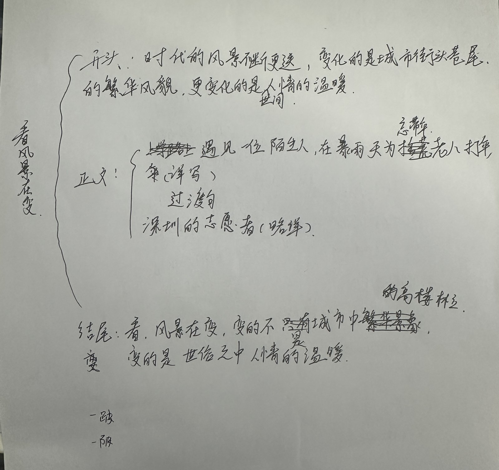
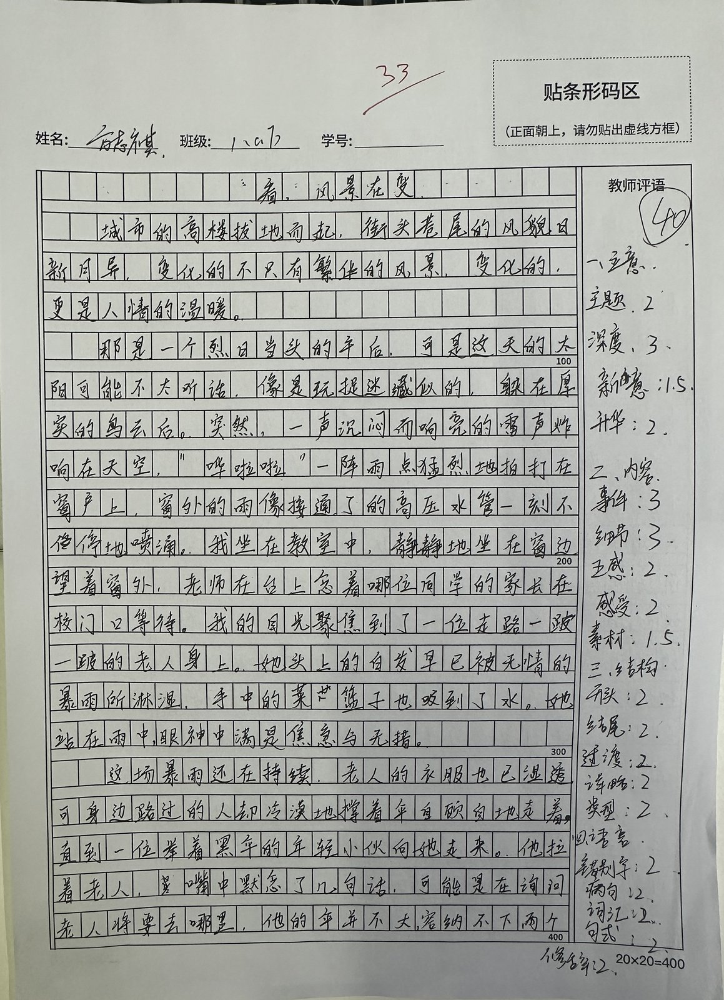
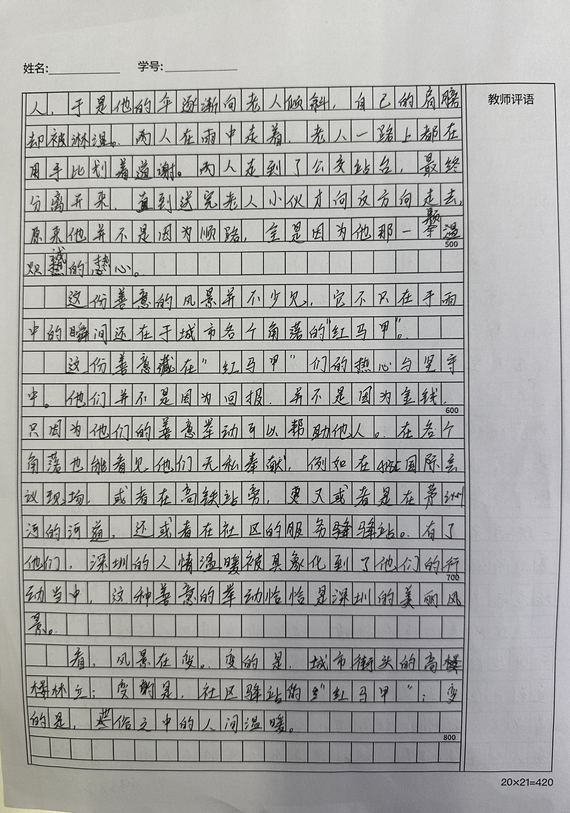
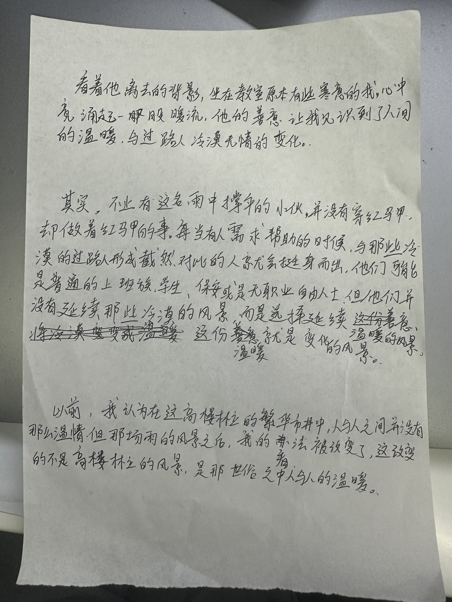

写作前 · 框架构思
构思先行
动笔之前，志祺先做了框架构思，围绕「看，风景在变」把整篇文章的「骨架」搭好：
- 开头：点明"时代的风景不断更迭，变化的是城市街头巷尾的繁华风貌，更变化的是人世间的温暖"，先扣住"变"
- 中间（经过·详写）：路上遇见一位陌生人，在暴雨天为老人打伞（细节提示"一路一跛"，体现老人行动不便）
- 过渡：用一句过渡句，从"雨中的个体善举"衔接到"深圳的志愿者群体"
- 中间（略写）：深圳的志愿者（红马甲）作为城市风景的群像呈现
- 结尾（升华落点）：回扣主题——"变的不只有城市中繁华的高楼林立，变的是世俗之中人情的温暖"
💡 规范点：先搭骨架再填血肉，是作文训练的第一步，也是「作文六要」里强调的成文习惯。
写作进行 · 成稿与自评
落笔成稿按构思完成全篇写作。作文题为 《看，风景在变》，全篇写在方格作文纸上，共两页。写完后志祺对照标准自评 40 分（满分 45 分）。


写完全篇后主动对照评分标准自评打分，这是「自我复盘」意识的体现 —— 知道自己写得怎样，才能知道往哪改。敢于给自己打高分，正是想冲一类文的底气。
AI 批改与提升建议
精准诊断作文批改与提升建议
先点赞：你的观察力与比喻运用非常棒
读完你的作文，我最欣赏的是你对雨景的 观察力和比喻的运用，比如把大雨比作「接通了的高压水管」，不仅生动，而且极具视觉冲击力。
综合来看，目前这篇作文整体处于 「Developing（二类文中档）」 的水平。最大的优点是「叙事完整、语言流畅」。
专项诊断 1：唤醒「体验」——不要只做一个冰冷的摄像头
成长点 1 加入"我"的真实感受（体验）
- 原文表现：「我坐在教室中，静静地坐在窗边望着窗外……」随后客观记录了老人的无助、路人的冷漠和小伙子的善举。
- 问题诊断：在指南的「第三要：体验」中明确提到，没有体验的文章是「正确但无感」的。在这个故事里，「我」完全置身事外了。雨那么冷，路人那么冷漠，小伙子那么温暖，这些有没有让窗内的「你」产生心理波澜？缺少了「我」的内心活动，文章就成了一篇新闻报道，感染力大打折扣。
- 下一步行动：尝试在看到小伙子倾斜伞面的那一刻，加入「我」的真实心理活动或身体反应。
看着他宁愿自己淋湿也要护着老人，坐在窗边的你，手心有没有微微发热？内心有没有觉得之前的寒意被驱散了？
比如：「看着他逐渐消失在雨中的背影，原本因为这场暴雨而感到一丝烦闷和寒意的我，心头忽然涌上一股暖流……」
这样，窗内的"我"就真正走进了风景里。
专项诊断 2：突破「选择」与「组合」——警惕素材的「拼凑感」
成长点 2 删减空洞列举，把「个体」与「群体」自然连接（选择与组合）
- 原文表现：第五、六段突然大篇幅列举：「红马甲」出现在国际会议现场、高铁站、茅洲河、社区驿站……
- 问题诊断：这是考场作文最容易踩的坑（指南「场景一」提到的套模板痕迹）。前面的雨中撑伞是一个非常具体、细腻的「第一层日常观察素材」，但后面突然切换到了非常宏大、像新闻联播一样的「红马甲」群像列举。这两块素材拼接在一起，体量极度不平衡，导致情感突然断裂，显得有些「假大空」。
- 下一步行动：指南里说「选择就是删除」。我们需要删减第六段那种空洞的列举，用更含蓄的方式将「个人」与「城市群体」连接起来。
我们不要去列举地名，而是去提炼一种「精神」。能不能这样过渡：
「其实，那个未曾留下姓名的撑伞小伙，没有穿红马甲，却做着红马甲的事。在这座城市里，像他一样的人还有很多，他们或许是街角的保安，或许是匆匆的过客……」
这样写，是不是就自然多了？
专项诊断 3：扣紧「立意」——把「变」的逻辑理顺
成长点 3 用「对比」点明认知变化，精准扣住题眼（立意）
- 原文表现：结尾写道：「变的是，尘俗之中的人间温暖。」
- 问题诊断：题目叫《看，风景在变》。既然是「变」，就需要有对比（指南中提到的横断面或纵剖面结构）。如果说「温暖」在变，那是从什么变成了什么？是从冷漠变成了温暖吗？你的文章中虽然写了路人的冷漠，但没有突出「我」对这座城市看法的改变。
- 下一步行动：运用指南中提到的「对比式」开头或结尾，点明你的认知变化。
你能在开头或结尾补充一下吗？
比如：「以前，我总觉得这座城市拔地而起的高楼太冰冷，人与人之间隔着厚厚的墙。但那场雨中的风景，改变了我的看法……」
这样，是不是就完美扣住了「变」字？
小贴士：词义的轻重与精准度
在「第六要：表现」中，我们强调词汇要准确。你写的「手中的菜篮子也吸到了水」和「他拉着老人」略显突兀。「吸到」有些口语化，「拉着」对于陌生人来说可能有些冒犯。
建议 1 菜篮子可以说是「饱吸了雨水，沉甸甸地往下坠」。
建议 2 小伙子可以说是「虚扶着老人」或者「微微倾斜伞柄，替老人挡住风雨」。
下一步行动
- 在「看到小伙子倾斜伞面的那一刻」，补写一段「我」的真实心理活动或身体反应，唤醒体验。
- 删减红马甲的空洞地名列举，改用「精神」过渡，把撑伞小伙与城市普通人自然连接。
- 用「对比式」开头或结尾，点明「我」对这座城市认知的变化，精准扣住「变」字。
按建议重写 · 过渡与抒情片段
落实修改拿到 AI 建议后，志祺针对「缺少体验、素材拼凑、立意未理顺」三个核心问题，动手重写了"小伙送老人离开后"的过渡与抒情片段。批改 → 修改 → 再打磨，这就是作文能力提升的关键闭环。

✗ 修改前
过渡（原）：从送伞事件直接跳转至「这份善意的风景并不少见，它不只在于雨中的瞬间，还在于城市各个角落的'红马甲'」。
问题：缺少第一人称的主观感受，"我"依然置身事外；从"雨中瞬间"到"红马甲群像"转折生硬✓ 修改后
抒情（新）：「看着他离去的背影，坐在教室原本有些寒意的我，心中竟涌起了一股股暖流，他的善意让我见识到了人间的温暖，与过路人冷漠无情的变化。」
过渡（新）：不止没穿红马甲的撑伞小伙，普通上班族、学生、保安等普通人也会摒弃冷漠、挺身而出传递善意。
升华（新）：从前以为繁华市井缺少温情，这场雨事后想法被改变——变化的从来不是高楼风景，而是世俗里人与人之间的温暖。
进步：有了"我"的真实感受（体验）、从个体自然过渡到群体（选择与组合）、点明认知变化（立意）日常作文训练规范 · 照着做
形成习惯这次训练展示了标准流程。以后每一次作文训练，都按以下五步来，形成规范习惯：
动笔前先搭框架：开头写什么、中间几个事例、过渡怎么衔接、升华落在哪。不构思不动笔。
写完对照评分标准给自己打分，并写下理由。自评是自我复盘的第一步。
让 AI 按中考评分标准诊断立意、结构、语言，拿到具体的修改建议。
针对指出的问题，重写开头、结尾或逻辑断层处，把建议真正落到文字里。
留出 3 分钟检查错别字与卷面。规范即分数，细节见功夫。
全程对照《初中语文作文底层能力训练完整指南（作文六要）》，让每一篇都练在方法上。